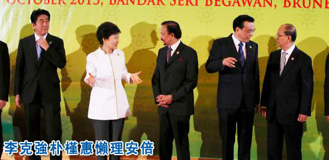

2014-10-18 23:31:00
今天台湾媒体转载了纽约时报转载匿名日本官员的小道消息，宣称“APEC习安会有谱，中日僵局融冰”（详见http://www.chinatimes.com/newspapers/20141018000881-260301；纽约时报的文章在这里：http://www.nytimes.com/2014/10/18/world/asia/leaders-of-china-and-japan-are-likely-to-meet-briefly-for-first-time.html）。具体的内容是在十一月的APEC会议期间，“日本首相安倍晋三与大陆国家主席习近平可能只见15分钟，但象徵意义重大。”“安倍与习近平的会晤已筹画数月之久，两国对此进行多番外交角力。虽然目前还未收到大陆最终答覆，但日方对中日领袖会晤信心满满。”
其实这个谣言在两个多礼拜前就传遍了美国外交界。美国政府在2011年委托学术界创办了一个国际关系智库，叫做Good Judgement Project；与一般的智库不同，它用智商测験再加上时事考试从全美挑选了几百名民间的志愿者，让他们对未来几个月内可能发生的国际事件进行投票。据称其预测的准确性远超所有其他的智库，甚至明显优于美欧的预言期货市场（也就是让你对未来事件下赌注的网站；GJP只挑有兴趣和能力的人来做预测，那些人人都可以乱猜的网站当然比不上）。我是GJP的成员之一；在2014年十月1日，Good Judgement Project就已经列出了习安会（必须是正式会议，不只是握手寒暄）是否会在年底前发生的问题，我给的机率是15%。
为什么只有15%呢？我在前文《美国的欧洲代理人板块重整》里已经提到过一些美日在今年的外交折衝过程。其实虽然中日在2012年就因为当时日本首相野田佳彦把钓鱼台国有化而开始交恶，但是野田只是为选举而做战术操弄，并没有任何战略上的企图。随着2012年年底日民党选举失败，安倍晋三领导的自民党重新上台，中日关系却因为安倍高调访问靖国神社并公开否认日军在二战的暴行，而持续恶化。日本企业在中国的投资和中日之间的贸易，也因此而连续萎缩了两年；这对中共经济影响很小，对孱弱的日本经济却是雪上加霜。日本为了安倍的小动作付出了很大的代价，可是安倍并不是因偏激而无知，他早已料到会有这様的损失；只是他有一个大的战略构想，其目标只有在牺牲对中贸易的先决条件下才有可能达成。这个目标就是日本的国际地位“正常化”。
在二战结束后，占领了日本全境的美国人，深知日本的军国思想甚为深厚，文过饰非更是日本上层阶级的特权习惯，要日本对其暴行深切反省、痛改前非是缘木求鱼。所以若是日本復兴了，极可能如同一战后的德国一様，再次发起侵略战争。可是当时美国有对抗苏联的需要，在韩战爆发后，日本在冷战中的战略地位又更上一层楼（详见前文《美国的东亜战略史》），因此美国没有其他选项，必须扶持日本经济快速復甦。于是美国人一方面替日本人写了新的和平宪法，禁止其对外用兵，并容许日本在广岛和长崎高调组织反核纪念运动（反对的是美国人自己丢的原子弹！）；另一方面，又学英国的榜样（中东和南亜在二战后争端不断，很大的原因是英国在撤离前所划的国界就是故意要引起这些争端的；我日后有空再详述），特意留下了日本和邻国日后磨擦的种子，例如独岛、靖国神社和钓鱼台。
六十多年来，继承了日本军国梦想的右翼政客，只能在美国眼角边的阴影下，偷偷摸摸地重建日本的战争潜力。在安倍之前，最成功的是中曾根康弘。在他的任内，日本建造了快滋生反应炉（Fast Breeder Reactor）和钸（Plutonium）回收处理厰，从1980年代中期开始，以“民用”为幌子，提炼了足以建造几百枚原子弹的钸原料。（不过就是因为要为平行的秘密军用计划让路，日本的民用核能监督机构执行力很弱，没有称职地保障核能电厰的安全，间接地导致了2011年三月的福岛核灾。）等到安倍二次上台的2012年，欧巴马试图抑制中共崛起的战略路线已是非常明显。安倍是个聪明人，有战略眼光，知道美国的策略是鼓动日本、台湾、菲律宾为马前卒，当他们与中共真的开斗，美国只会出卖他们，袖手旁观，等尘埃落定，再领导“自由世界”对中共做经济制裁，亦即鼓动乌克兰去斗俄国的同一策略（详见前文《从乌克兰看今日美俄的政略与战略》）；如此一来，不但美国不必付出任何代价，就可以严重打撃中共，其他强权也会因制裁中共而蒙受经济损失，而那些当了炮灰的马前卒更是只能死心塌地当美国的奴才，任由美国通过军售和贸易协定来掠夺其国家财富，可谓一举三得。于是安倍将计就计，假装是个不顾现实后果的激进军国主义者，处处设法激怒中共，连百亿美元的经济损失都淡然承受。欧巴马心花怒放，既然日本自愿当炮灰，和平宪法里对海外用兵的限制当然得废除了；于是双方实际上各怀鬼胎，在表面上却是指天划地，宣誓对美日同盟其心不移。等到2014年四月，欧巴马访日，安倍早已重新“解释”宪法，让日本获得了“集体自卫权”，也就是对外用兵的能力，再请欧巴马在记者会上为日本成为有军事权力的“正常”国家正式背书。欧巴马不疑有他，明确地说出美国支持日本对外用兵；没想到记者会一开完，安倍原本口头承诺的TPP（Trans-Pacific Partnership，美国为自己量身订做，一并围堵中共的贸易协定）谈判上的让步就烟消云散了。安倍继续用好酒好肉招待欧巴马（有报导说是日本有史以来，给予外宾最豪华最昂贵的接待），但是TPP，用美国的成语来说，就是Dead As A Doornail，死得和门钉一様。
从四月起，安倍对美国已经不再有所求，与中共的贸易利益就成为最重要的战略考量。于是先是民间的企业家，接着是退休的官员，最近是议员团体，一波波地前往北京进行友好访问，苦苦哀求要重建中日关系，具体的就是要进行习安会。其实在2013年，安倍还在天天惹中共的时候，日方就千方百计要让安倍和习近平或李克强拍张合照；当时的用意是要证明中共拿日本没办法，日本再怎么闹，中方也得忍气吞声逆来顺受。习李当然不会受这种侮辱，在国际会议里一见到安倍头就转开了。如果那时GJP就询问习安会的可能性，那答案只能是零。现在安倍的要求没了那个侮辱性，是真正寻求改善关系，可是中共是有民族骨气的；安倍不在钓鱼台问题上做实质的让步，只是暂时性不去靖国神社，诚意显然不够，而且安倍连美国主子都敢当猴子来耍，习近平是不可能信任他的。所以虽然李克强前天在米兰和安倍握了手，习安会还是只有在安倍做了重大的幕后让步的前提下才有可能，15%已经是很客气了。
【后注】果然如我所料，安倍必须在钓鱼台问题上做让步。还不到一天，就有消息（详见http://thediplomat.com/2014/10/japan-caves-to-china-on-senkaku-island-dispute/）声称安倍为了能和习近平握手寒暄，已经同意在钓鱼台问题上，承认主权有争议。这就是美式文化下的现代社会：你撒谎了一辈子，终于同意说一句大家都知道的实话的时候，还要别人感谢你。